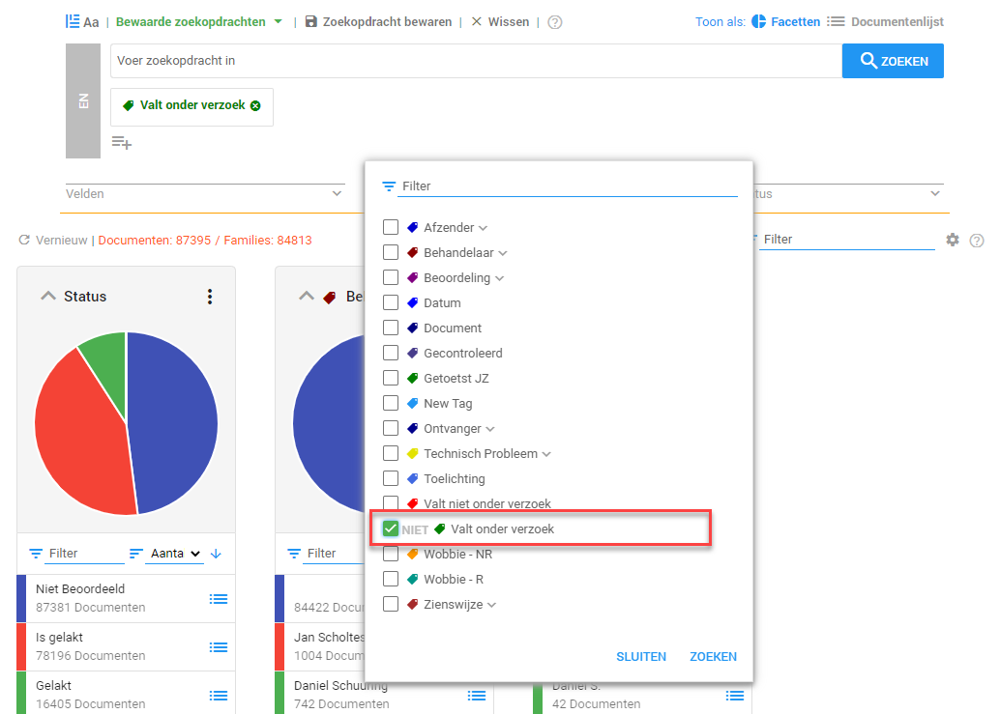
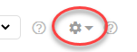
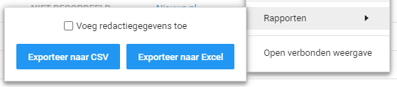

Selecteer de tag Valt onder verzoek en klik op Zoeken.

Vervolgens gaat u naar de Documentenlijst.
Klik op het tandwiel:

Klik op Rapporten.

Klik op Exporteer naar CSV. Indien u Voeg redactiegegevens toe aanvinkt worden de redenen op basis waarvan u heeft afgelakt ook vermeld in de inventarislijst. U kunt hier kiezen uit de optie Gedetailleerd of Samengevat. De optie Samengevat voegt toe welke aflakgronden per document zijn gebruikt. De optie Gedetailleerd toont elke individuele aflakking en op welke pagina deze is geplaatst.

De inventarislijst wordt in een Excel bestand gedownload.